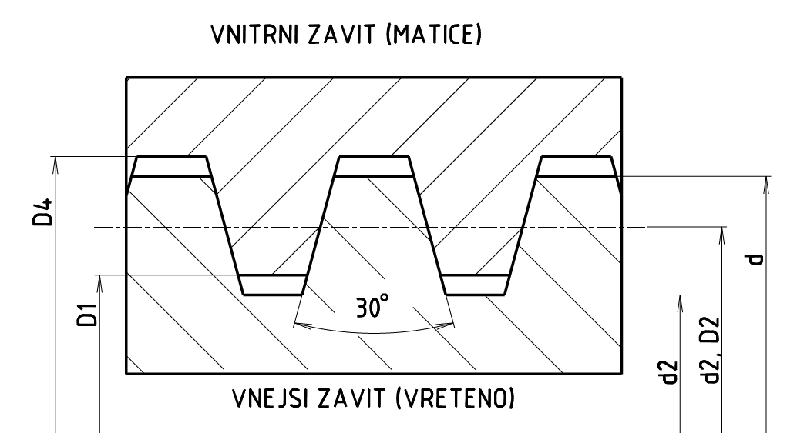

Pravý lichoběžníkový jednochodý závit vřetene s jmenovitým průměrem d = 20 mm, s roztečí P = 4 mm, s normální délkou zašroubování, s tolerančním polem 7e středního průměru d2, s tolerančním polem 4h velkého průměru d, se označí (toleranční značka 4h se nezapisuje)
Tr 20x4 - 7ePravý lichoběžníkový závit pohybové matice s jmenovitým průměrem 20 mm s roztečí P = 4 mm, s normální délkou zašroubování, s tolerančním polem 7H středního průměru D2 a s tolerančním polem 4H malého průměru D1, se označí (toleranční značka 4H se nezapisuje)
Tr 20x4 - 7HLevý lichoběžníkový závit vřetene se jmenovitým průměrem d = 20 mm s roztečí P = 4 mm, s délkou zašroubování 63 mm (dlouhá), s tolerančním polem 8e středního průměru d2, s tolerančním polem 6h velkého průměru d, se označí
Tr 20x4LH - 8e6h - 63Pravý lichoběžníkový dvojchodý závit vřetene s jmenovitým průměrem d = 20 mm, se stoupáním P2 = 8 mm (tj. s roztečí P = 4 mm), s normální délkou zašroubování, s tolerančním polem 8e středního průměru d2, s tolerančním 6h polem velkého průměru d, se označí
Tr 20x8(P4)-8e6hLevý lichoběžníkový závit pohybové matice trojchodý se jmenovitým průměrem 40 mm se stoupáním Ph = 21 mm (tj. s roztečí P = 7 mm), s délkou zašroubování 100 mm (dlouhá), s tolerančním polem 8H středního průměru D2 a s tolerančním polem 4H malého průměru D1, se označí
Tr 40x21(P7)LH-8H